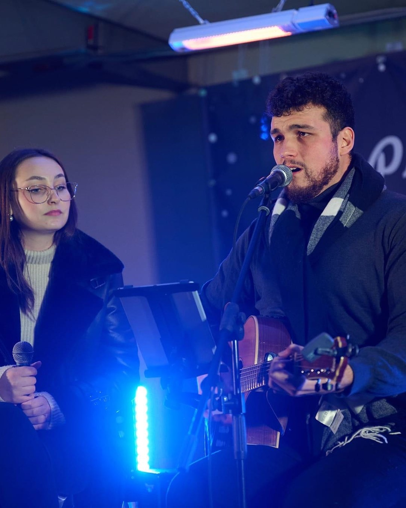

Poroke
Glasbena spremljava za civilne in cerkvene obrede, prihod po nevesto, sprejeme gostov in druge čustvene trenutke poročnega dne.
Andraž & Nuša | Glasba v živo
Glasbena spremljava za poroke, obrede, sprejeme in posebne dogodke.
AINN Music
Sva Andraž in Nuša, glasbeni duo AINN Music. Z vokalom, kitaro in občutkom za trenutek ustvarjava elegantno glasbeno spremljavo za poroke, obrede, sprejeme in posebne dogodke.
Najin nastop temelji na občutku, prostoru in zgodbi para. Zato vsako izvedbo prilagodiva dogodku, izbranim skladbam in vzdušju, ki ga želita ustvariti.
Poroke & dogodki
Glasbena spremljava za civilne in cerkvene obrede, prihod po nevesto, sprejeme gostov in druge čustvene trenutke poročnega dne.
Akustična glasba v živo za poslovne dogodke, otvoritve, večerje in posebna druženja, kjer je pomembno prijetno vzdušje.
Topla in sproščena glasbena spremljava za praznovanja, kjer glasba poveže goste in ustvari poseben večer.
Osebni glasbeni nastopi za zaroke, obletnice in trenutke, ki jih želite podariti nekomu posebnemu.
Galerija
Izbrani utrinki, ki pokažejo najin glasbeni stil, energijo in pristnost nastopa.



Kontakt
Pošljita osnovne informacije o dogodku in odgovoriva v najkrajšem možnem času.